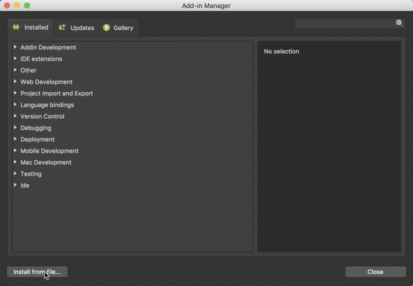
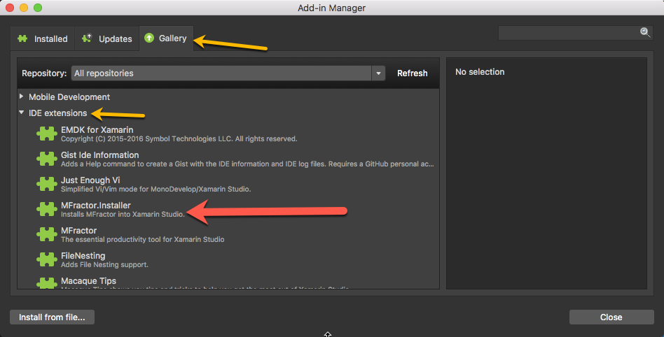

Installation And Setup
Installing, activating and updating MFractor
Introduction
This document covers how to install, activate, update and uninstall MFractor for Visual Studio Mac.
Get MFractor
The latest version of MFractor for Visual Studio Mac can be downloaded from the addin server, addins.mfractor.com/MFractor.mpack.
If you'd like an older version of MFractor, these can be found under our old release archives. Simply navigate to addins.mfractor.com/releases, open the folder for the version you'd like and download the .mpack file.
Install MFractor Manually
MFractor can be installed directly through the addin manager's Install from file button.
Firstly, download the latest version of MFractor for Visual Studio Mac at addins.mfractor.com/MFractor.mpack
Open up Visual Studio Mac and click on the Visual Studio Mac menu and then Addins...

Within the Addin Manager, click the Install from file button in the bottom left of the Addin Manager.
Browse to MFractor.mpack and then select Open:

Install Using MFractor.Installer
We can also install install MFractor into Visual Studio Mac by using the MFractor.Installer helper addin.
This addin lives inside the Addin Manager in Visual Studio Mac, under Gallery -> IDE extensions.
Open up Visual Studio Mac and click on the Visual Studio Mac menu and then Addins...
Once the Addin Manager opens, click Gallery and under IDE extensions locate MFractor.Installer. If this isn't present, hit the Refresh button to update the Gallery listings.

Once you've located MFractor.Installer, left click on it to select it. In the right hand detail view, click Install. Visual Studio Mac will prompt you for confirmation, click Install

You will then see a download dialog appear and MFractor will download and install.

Activation
To use MFractor, you'll need activate it using your email address.
First things first, close the Addin Manager. There is a known bug that blocks the email entry field from receiving keyboard when the Addin Manager is open. It's a pain and we are working on fixing this.
To activate MFractor, enter you email and then click Activate.

Tada! You are now ready to rock. Why not learn how to use MFractor for Xamarin.Forms or Xamarin.Android next?
Updating
When MFractor installs into Visual Studio Mac, it'll register itself into Visual Studio Macs addin updater.
This means that Visual Studio Mac will automatically prompt you that an update is available.
However, you can check for udpate at any time by opening the Visual Studio Mac main menu and selecting Check for Updates...

Visual Studio Mac will check the MFractor addin server for updates and prompt you to update if there is a new version!
Uninstalling MFractor
You can uninstall MFractor through the addin manager at any time.
Select the Visual Studio Mac main menu and then Addins
Under Gallery then IDE extensions select the MFractor addin list item and then click Uninstall
You will be prompted to uninstall the addin, confirm uninstallation by clicking Uninstall